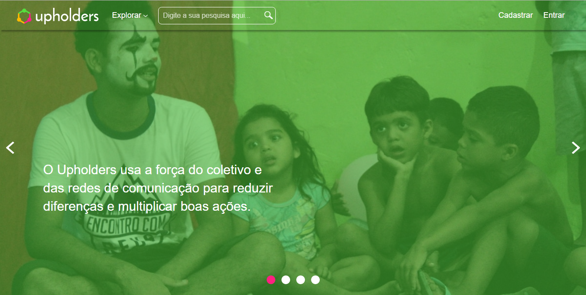
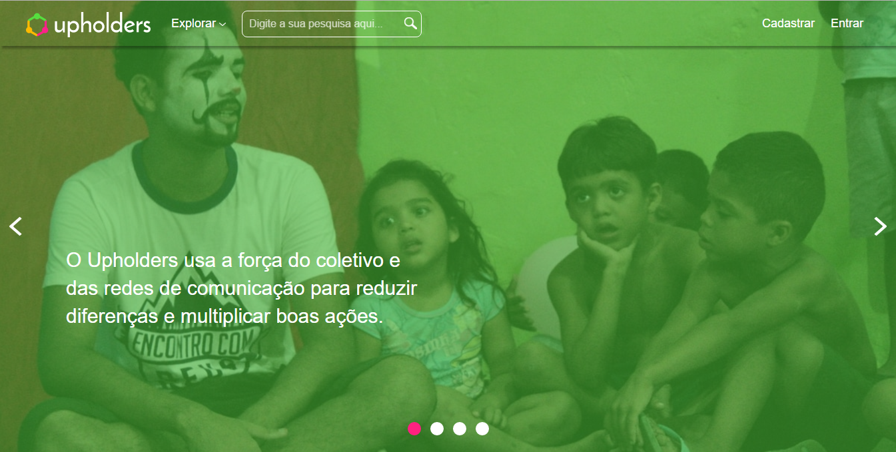

Padrões de Interface
Barra de Navegação
Utilizada em toda navegação para auxiliar os usuários a navegarem pelo site.
Descrição
Com a Barra, o usuário pode acessar a página inicial pela a logo do site, pode procurar por categorias de projetos sociais no botão Explorar, e pode realizar um cadastro ou entrar em sua conta.
Quando usar
A Barra de navegação deve ser utilizada em todas as páginas em que um usuário não logado tem acesso, com isso, o usuário pode realizar as atividades disponiveis na Barra onde quer que for. Quando logado, o botão entrar e cadastro, devem sumir e serem trocados por um botão que dá acesso a atividades que o usuário pode realizar na sua conta.
 


Slideshow
O slideshow é utilizado no Upholders para informar aos usuários as características da plataforma.
Eles são utilizados para promover o Upholders.
Descrição
O slideshow deve conter sempre imagens e textos curtos. No canto inferior do slideshow deve conter a quantidade de slides que existem e o destaque de no slide em que o usuário estar, deve conter também os controles para passar para a direita e a esquerda. No Uplholders, os slideshow pode passar para o próximo sozinho, desde que o tempo que leve para passar esteja de acordo com a leitura das informações.
Quando usar
O slideshow deve ser utilizado para promover a prataforma e informar os usuários das funcionalidades. Ele deve ser utilizada quando não existe muito espaço na página para informar e também deve ser utilizado para chamar a atenção dos usuários para o Upholders.

Carrossel
O carrossel é utilizado no Upholders quando o usuário precisa visualizar e percorrer um conjunto de itens.
Descrição
Conjunto de itens em uma linha horizontal, cada item contém uma imagem que chame a atenção do usuário.
Deve ser exebido apenas 3 cards (quando se trata de carde de projetos sociais) ou apenas 1 card, no caso dos cards dos relatos de experiência.
Quando usar
Quando tiver um grande conjuntos de itens para mostrar; Quando não tiver espaço suficiente para mostrar todos itens; Quando for itens visuais e informativos.

Dropdown
O Dropdown é utilizado no Upholders quando o usuário precisa visualizar um conjunto de itens com um mesmo tema.
Descrição
Os itens devem está dispostos em coluna e devem ser agrupados de acordo com um tema específico.
Quando usar
O Dropdown deve ser utilizado quando há pouco espaço na interface; Quando os itens podem se agrupados de acordo com um tema específico. E devem ser utilizados para itens que devem ter fácil acesso para o usuário.

Títulos
Os Títulos são utilizados para exibir aos usuários o assunto da secção que ele estar.
Descrição
Os Títulos devem seguir o padrão de estilo do Upholders para captar a atenão do usuário, deixando-o informado.
Quando usar
Devem ser utilizados no início de carrosséis, no início de itens que não estão sozinhos na interface e que não são autoexplicativos e no início de modais.


Cards
Os cards são utilizados para passar aos usuários informaçãos rapidamente e resumidamente.
Descrição
No Upholders existe dois padrão de cards que são utilizados em situação específicas. Os cards, apresenta, nova informações quando o cursor do mouse estar emcima, mostrando aos usuários informaçõe mais específicas e a opção de "saber mais".
Quando usar
Os cards devem ser utilizados quando as informações são pequenas e fáceis de interpretar, eles devem vir em conjunto com uma imagem e ícones represetativos e autoexplicativos.


Rodapé
O Rodapé é utilizado para melhor navegação do usuário.
Descrição
O Rodapé informa aos usuários parte da navegação do Upholders e pode ser acessado no final da maioria das páginas.
O Rodapé funciona como guia de navegação e auxilia os usuários a encontrarem o que precisam em um só lugar.